6.6.4 過去の規格との互換性を維持するための包摂規準 この漢字の包摂規準は，次の29の区点位置に限って適用する。
附属書6に示す漢字の例示字体のうち，次の29の区点位置の例示字体である(A)の漢字は，それぞれの区点位置に対応する。さらに，次のそれぞれの(B)に示す字体の漢字も，その区点位置に対応する。
備考 これら29の区点位置については，この包摂規準を適用した後に，更に6.6.3を適用してもよい。
| (A) (B) | 適用する区点位置(規定) |
|
| 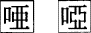 | 唖16-02 |
| 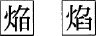 | 焔17-75 |
| 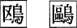 | 鴎18-10 |
 | 噛19-90 |
| 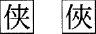 | 侠22-02 |
| 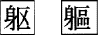 | 躯22-77 |
 | 鹸24-20 |
| 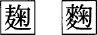 | 麹25-77 |
| 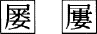 | 屡28-40 |
| 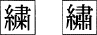 | 繍29-11 |
| 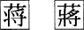 | 蒋30-53 |
| 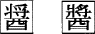 | 醤30-63 |
| 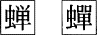 | 蝉32-70 |
| 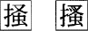 | 掻33-63 |
| 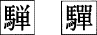 | 騨34-45 |
| 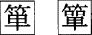 | 箪35-29 |
| 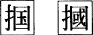 | 掴36-47 |
| 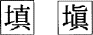 | 填37-22 |
| 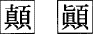 | 顛37-31 |
| 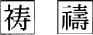 | 祷37-88 |
| 涜38-34 |
 | 嚢39-25 |
 | 溌40-14 |
| 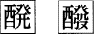 | 醗40-16 |
| 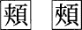 | 頬43-43 |
| 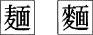 | 麺44-45 |
| 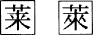 | 莱45-73 |
| 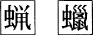 | 蝋47-25 |
| 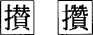 | 攅58-25 |
参考1. これらの包摂規準は，もっぱら過去の規格との互換性を維持するために設けられたものである。
2. これら29の区点位置については，規格に適合していると主張するためには，それぞれ(A)又は(B)のどちらの字体を採用したかを文書に明示することが必要である(3.1.3参照)。
3. これらの区点位置は，この規格の過去及び現在の規格票の間で，矛盾する字体の整理・変更が行われているものである。
目次にもどる。